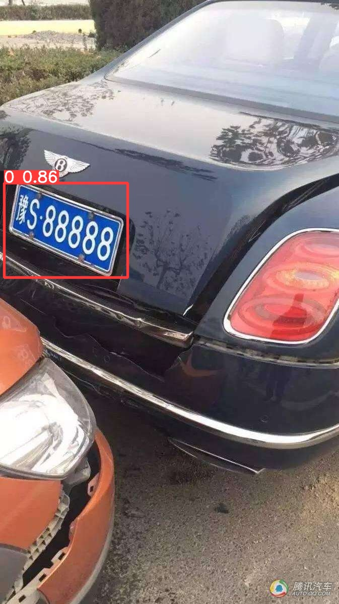

检测车牌区域
# YOLOv5 🚀 by Ultralytics, GPL-3.0 license # COCO128 dataset https://www.kaggle.com/ultralytics/coco128 (first 128 images from COCO train2017) by Ultralytics # Example usage: python train.py --data coco128.yaml # parent # ├── yolov5 # └── datasets # └── coco128 ← downloads here (7 MB) # Train/val/test sets as 1) dir: path/to/imgs, 2) file: path/to/imgs.txt, or 3) list: [path/to/imgs1, path/to/imgs2, ..] path: /mnt/workspace/CV/datasets/plate_images # dataset root dir train: train/images # train images (relative to 'path') 128 images val: val/images # val images (relative to 'path') 128 images test: # test images (optional) # Classes names: 0: "plate" # nohup python train.py --data ./data/plates.yaml --batch-size 16 --epochs 3000 --device 0 --label-smoothing 0.1 --name train --project ./runs/plate --patience 50 >plate.train.log 2>&1 & # python detect.py --weights runs/plate/train/weights/best.pt --source ../datasets/plate_images/test/images --conf-thres 0.7 --save-txt --save-conf --save-crop --name detect --project ./runs/plate plates.yaml

扩展：更改数据增强，增加透视变换
==============================================================
车牌区域识别的YOLOv5模型训练
a. 最基本的模型训练
1. 车牌数据标注, 采用voc格式表示
2. 使用voc2yolo.py代码，将voc格式转换为yolo格式
3. 构建data/plates.yaml数据配置文件
4. 构建模型配置文件models/yolov5s_plates_v1.yaml（可选）
5. 调用python代码训练
python train.py --weights ./study/yolov5s.pt --cfg ./models/yolov5s_plates_v1.yaml --data ./data/plates.yaml --epochs 10 --batch-size 8 --workers 0
6. 检测 --> 主要看是否有错检、漏检
python detect.py --weights runs\train\exp\weights\best.pt --source data\plates --view-img --save-txt --max-det 1 --conf-thres 0.20 --augment
python detect.py --weights runs\train\exp\weights\best.pt --source data\plates\10.png --view-img --save-txt --max-det 1 --conf-thres 0.13
b. 基于基础模型的效果，进行调整
操作：
1. 找一批没有参与模型训练的数据集，使用detect.py代码进行预测，查看预测效果
针对错检、漏检的情况进行阈值、参数的调整
2. 将错检、漏检的数据在训练数据中增加，或者通过更多的数据增强方式来拟合出容易出错的样本数据来
在训练数据中，加入更多不容易决策/判断的数据
3. 调整训练的方式/网络的结构.....
调整先验框的相关信息
python train.py --weights ./study/yolov5s.pt --cfg ./models/yolov5s_plates_v2.yaml --data ./data/plates.yaml --epochs 10 --batch-size 8 --workers 0
python detect.py --weights runs\train\exp2\weights\best.pt --source data\plates --view-img --save-txt --max-det 1 --conf-thres 0.13
python detect.py --weights runs\train\exp2\weights\best.pt --source data\plates --view-img --save-txt --max-det 1 --conf-thres 0.13 --augment
扩展：
-1. 将v6/v7/v8/v9中，你觉得好的模块结构融入到v5中
-2. 可以考虑将最后输出head的3*3卷积更改为5*5卷积，就相当于使用了更大范围的特征进行推理预测，一定程度上可以减少错检的情况
-3. 将分类和回归分支拆解，变成两条独立的分支
-4. 数据增强的改进:
-4.1 fliplr和flipup可以不要
-4.2 hsv的增强可以进行调整一下
-4.3 加大旋转的可能性
-4.4 数据增强的逻辑在最后n个epoch中不生效
-5. NMS的调整
-6. 损失函数的调整
-7. 更改网络结构及损失函数，参考关键点检测思路，模型直接预测出车牌的四个坐标点的位置
使用YOLOv8做目标检测
yolo detect train data=datasets\plates.yaml model=configs\yolov8-plates.yaml pretrained=configs\yolov8n.pt epochs=10 batch=8 device=cpu workers=0 cos_lr=true
c. 模型的部署 yolo detect predict model=runs\detect\train\weights/best.pt source='../yolov5/data/plates/'
-a. 将模型转换为onnx结构
python export.py --weights runs\train\exp5\weights\best.pt --include onnx --dynamic
NOTE: 部署采用OpenCV的代码逻辑，所以这里必须转换为静态的onnx结构
python export.py --weights runs\train\exp5\weights\best.pt --include onnx
相关操作布置